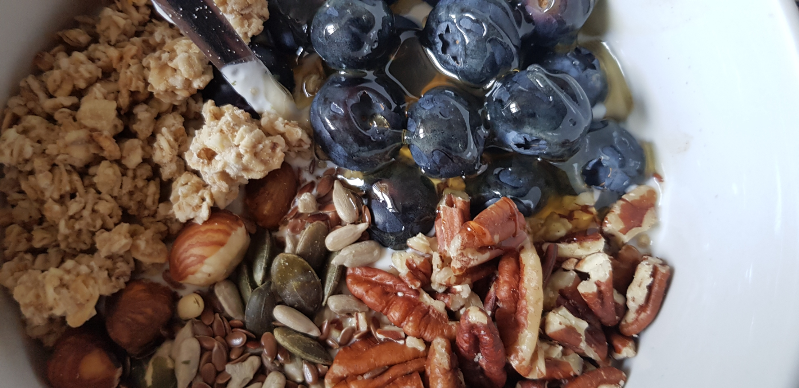

Delicious Fruit and Granola Yogurt Bowl

A healthy, wholesome bowl, ideal for breakfast or lunch.
Ingredients:
- A handful of whatever berry or berries you like
- A few generous spoonfuls of light, greek-style yogurt, or skyr
- A handful of your favourite granola
- A handful of mixed seeds
- Honey, to top
Instructions:
- Dollop as much yogurt as desired into the bottom of your bowl.
- Now for the fun part! Organise your berries, granola, and seeds in a way that looks neat and pretty to you. It'll look so good, you wont want to eat it!
- Drizzle honey on top, for an extra-indulgent sweetness.
- Tuck in!